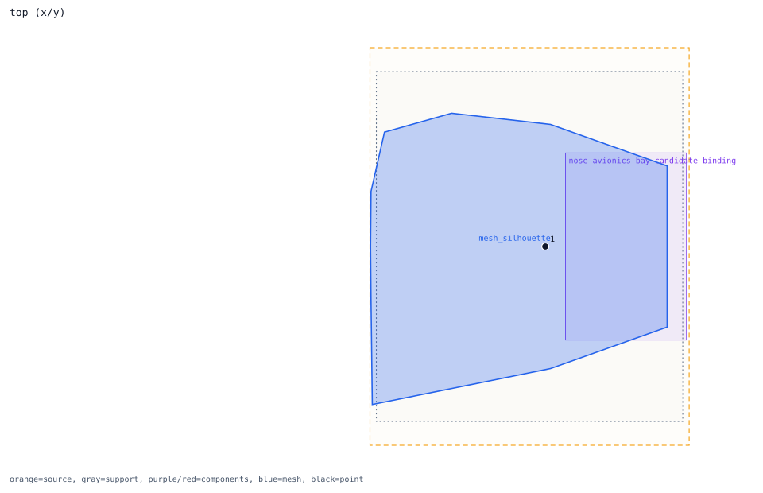
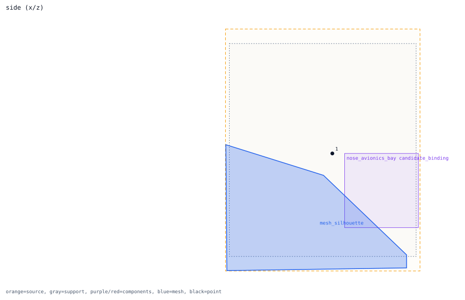
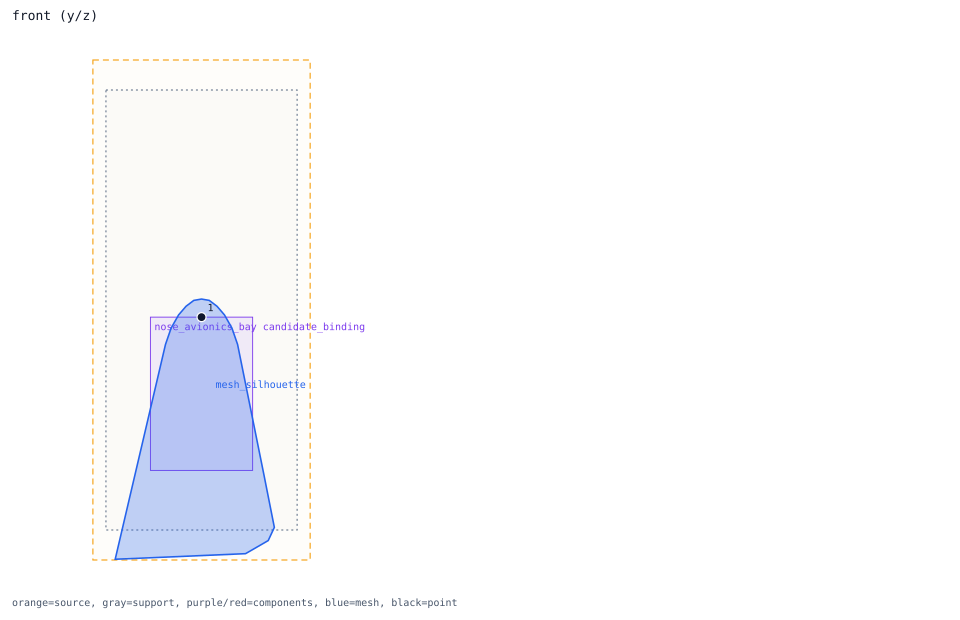

nose_axis_4m -> nose_avionics_bay
review point candidate
Review question
Does nose_axis_4m explain the nose close-to-shape behavior without relying on direct-hit boxes?
Look at
The black point should be read against the nose/forward-fuselage blue silhouette and nearby red component boxes.
Decision needed
Decide whether this point has a valid candidate-component path, or whether nose proximity must remain held.
Trace Details
- point: nose_axis_4m at [4.0, 0.0, 0.0]
- nearest outer region: forward_fuselage
- nearest outer distance: 0.0 m
- nearest fine proxy: canopy
- isolated candidate component: nose_avionics_bay
- nearest component: dedicated_canopy_surface_component
- nearest component distance: 0.125 m
- candidate component count: 7
- interpretation: inside_outer_shape_with_nearby_component_candidates_review_only


